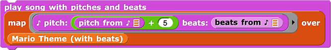
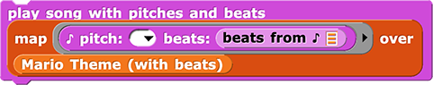

Mapping over Pitches and Beats
Lab 5, Page 9
In this activity, you will learn how to transpose data in a song that is stored in a table.
You’ve learned how to use map to transpose (shift) all the pitch values in a song where each note plays for the same length, and you’ve learned how to use a table to store both pitch and beat values for the notes in a song. You can also transpose the pitch values stored in a table.

This code is a bit complicated. Notice that it plays a version of Mario Theme that has gone through the map block. So the question is: What does this map block do?
Obviously, this whole page a bit of a reach, but I feel like the question will arise for some kids of how to do this, and so I want to offer something for them (even if they just read it on their own time). In the TG, this will be listed as optional. Any suggestions for improving this presentation? –MF, 2/27/22
Yeah, this is a bit of a doozy, especially because they really should have read the yellow box on the previous page to understand the ADT selectors. I definitely think it should be optional, as you say it is. Maybe you can make sure they’ve read that yellow box, or repeat all/parts of it here? -pf 3/6/22
I’ve added a first problem on this page about going back and reading that. Sufficient to close this comment, or should we discuss this further? –MF, 3/7/22
Recall that play song with pitches and beats expects a table of song data as input, map works through every item in a list, and every item in the table of pitches and beats is one note. So, map applies a function to every note in the Mario Theme and outputs a table of notes (pairs of pitches and beats).
' variable showing a table with two columns and eleven rows. The rows contain the value pairs: (76, 0.25), (76, 0.25), (0, 0.25), (76, 0.25), (0, 0.25), (72, 0.25), (76, 0.25), (0, 0.25), (79, 0.25), (0, 0.75), (67, 0.25)") →
→ ' variable showing a table with two columns and eleven rows. The rows contain the value pairs: (81, 0.25), (81, 0.25), (5, 0.25), (81, 0.25), (5, 0.25), (77, 0.25), (81, 0.25), (5, 0.25), (84, 0.25), (5, 0.75), (82, 0.25)")
In order for map to output a table of pitches and beats, it needs to apply a function that outputs pairs of pitches and beats. So the code needs a structure like this:
What function outputs pitches and beats? The block. So the code needs a structure like this:
Needs alt-title text. –MF, 2/27/22
But remember that the inputs that end up in the blank spots of the function in the map block each time it applies the function are the items in the input list, which in this case are the notes (pitches and beats from Mario Theme (with beats)).
So, to get a beats value in the beats slot, we need to use the beats from ♪ block, which takes a note (with a pitch and a beat) and reports just the beat.
Needs alt-title text. –MF, 2/27/22

And to get a pitch value in the pitch slot, we need to use the pitches from ♪ block, and we need to add our shift value to do the transpose.
Needs alt-title text. (copy from above once written) –MF, 2/27/22
-
Go back to the previous activity page, open all the links in the box labeled “How does the
play song with pitches and beatsblock work?”, and read all the information included there. Before moving on, discuss any questions you have about how that block works. -
 Read through the description above again, and discuss how mapping over a table takes a song (with pitch and beat data) as input and reports a song with the pitches transposed (shifted). Explain it in your own words.
Read through the description above again, and discuss how mapping over a table takes a song (with pitch and beat data) as input and reports a song with the pitches transposed (shifted). Explain it in your own words.
- Open your “Song Player - Pitches and Beats” Snap! project.
-
Use the structure of the code shown above as a guide, and transpose one of your songs.
They don’t need a hint. All they’re asked to do is copy your code but with a different song substituted. For them to understand the code may be hard, but the hint doesn’t help with that, and it’s not required of them. Having a hint will just make them worry that they’re missing something. –bh 3/3/22
I included this here so they don’t have to scroll around to find it. If the are looking for a hint, it’s because scrolling up didn’t work somehow. Feel free to suggest a tweak, but that’s the idea behind having it. –MF, 3/6/22
Your code should look like this but with your own song variable in place of Mario Theme (with beats) and a different shift value (instead of 5).
Needs alt-title text. (copy from above once written) –MF, 2/27/22
-
Create a longer song by playing different versions of the same song at different pitches.
Example: Mario Theme Mapped
Tip: Try shifts like 1, 4, 7 and see which sound good to you. What about other shifts?
OK, cut for now, but left for possible discussion. I don’t disagree with any of this; I was trying to get at “Why is this so complicated? Can we do this an easier way?” and empower students: “If you have an idea, try it!” But I guess it’s not as empowering to say “try it” i this case… –MF, 3/6/22
I don’t understand why this problem is here in particular. It’s something that could be asked all of the zillion places in which this curriculum shows how to do something. Do you have in mind a particular thing you think they’ll try that won’t work? –bh 3/3/22
Do you have an idea for a different way to transpose a song that has both pitch and beat information? Try to build it. If it works, explain how it works to someone else. If it doesn’t work, talk with someone else and figure out why it doesn’t work.
I’m noticing a bunch of these exhortations in yellow boxes in the curriculum. I’m not a fan. This particular one is especially bad because it tells students, “you think you know another way, but it’s not going to work, ha ha, you’re dumb.” I would go through the whole curriculum, find all of these, and remove them. –bh 3/3/22
Understanding why code you thought would work doesn’t actually work is an important part of programming.
-
In this activity, you shifted the pitches and left the beats alone, but you could use
mapto change the beats in some way. Try it!
In this activity, you learned how to use map in a more complicated situation in which you want to transform only part of an item with multiple parts.
Needs alt-title text. –MF, 2/27/22